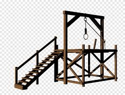
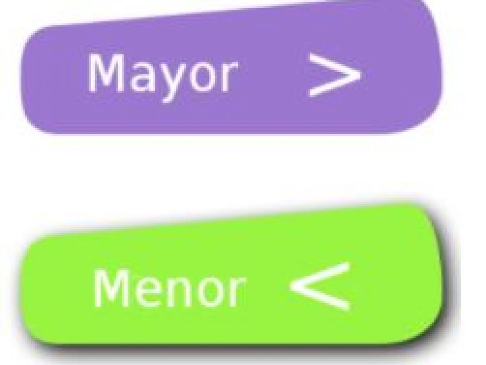
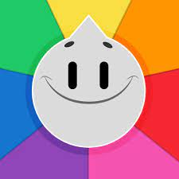

A "Piedra, papel o tijeras" se juega de dos en dos. Los jugadores se deben poner uno frente al otro con una mano a la espalda y decir en alto: piedra, papel o tijera, justo al acabar la frase enseñarán las manos y verán quien gana. Si los dos jugadores sacan la misma figura ..................................
El tateti -o tres en raya- es un juego bastante simple. Consta de un tablero de 9 casillas donde dos jugadores se turnan para realizar sus movimientos. El objetivo es conseguir colocar tres fichas propias en línea -ya sea vertical, horizontal o diagonal- antes que el contrario.................................
El Juego de adivinar la persona es un juego muy divertido en el cual se tiene que adivinar quien se encuentra en la imagen pero OJO está imagen está difuminada lo cual no va a ser tan facil como uno cree a veces uno piensa que es una persona pero en realidad es otra que es muy parecida.........................
El Preguntados es un juego maravilloso que no sólo permite al niño desarrollar su memoria, orientarse en el espacio, el reconocimiento visual, entre otros, sino que además facilita la incorporación de conocimientos y saberes de la cultura general de manera lúdica..............
